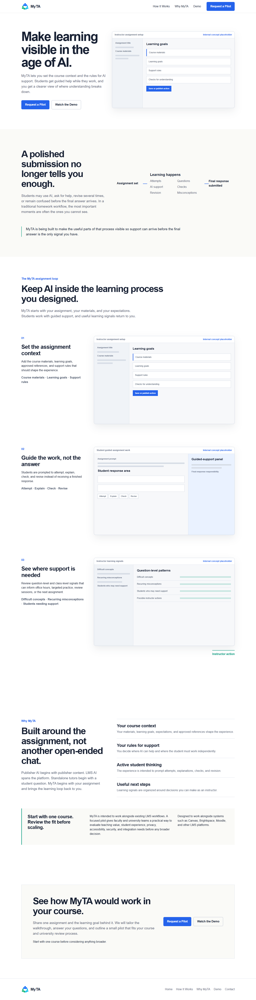
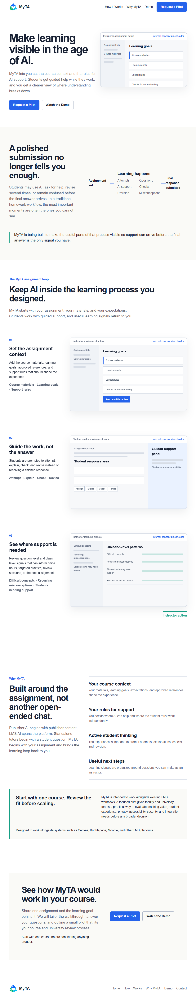
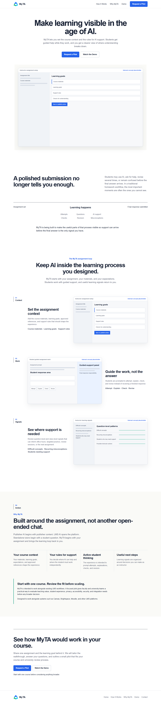
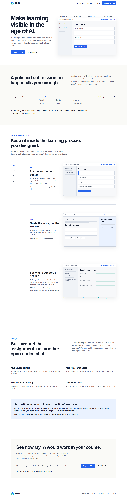
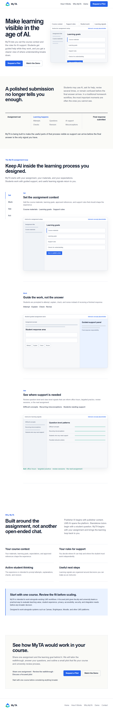

Concept A: Connected Assignment Loop
Make the connected assignment loop the visible structure of the page.


Concept B: Editorial Academic Product
Present MyTA as a serious higher-education product with an editorial hierarchy and large, calm product evidence.

Concept C: Precision Course Workflow
Make the website exceptionally clear and practical for an instructor evaluating one course, while retaining a professional higher-education tone.


Known limitations
- All product frames are structural internal placeholders, not representations of finished product functionality.
- DM Sans is loaded from the official Google Fonts stylesheet and therefore requires network access.
- Request a Pilot links move to the closing prototype section; these review artifacts contain no form.
- Watch the Demo and Demo navigation links point to the existing repository Demo route, which was not modified.
- These artifacts translate the approved blueprints for review and are not production designs.